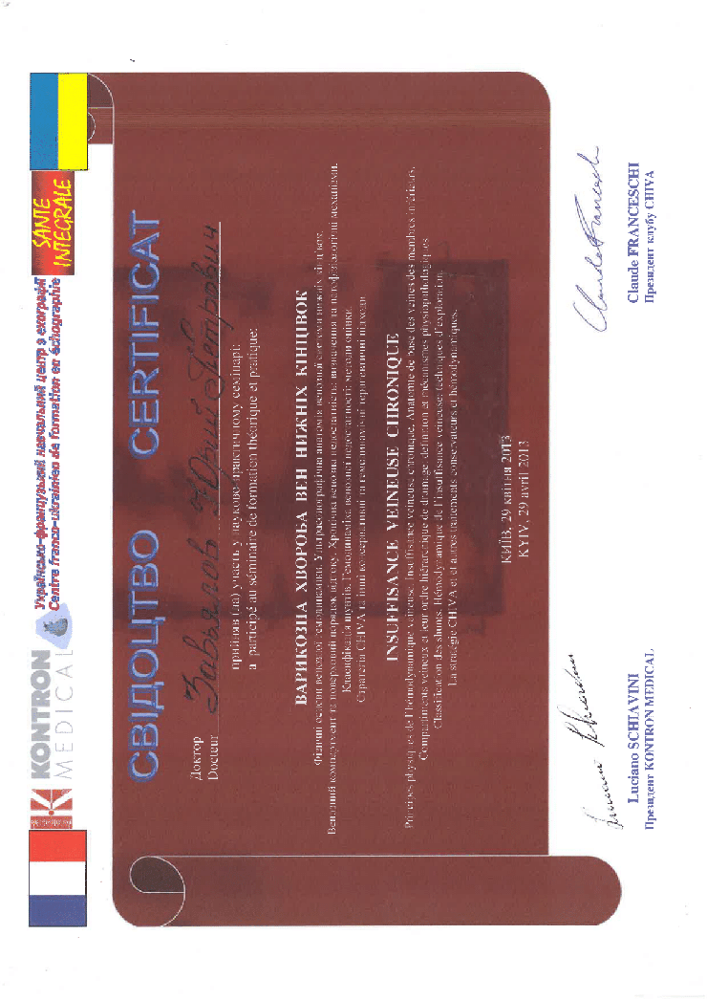
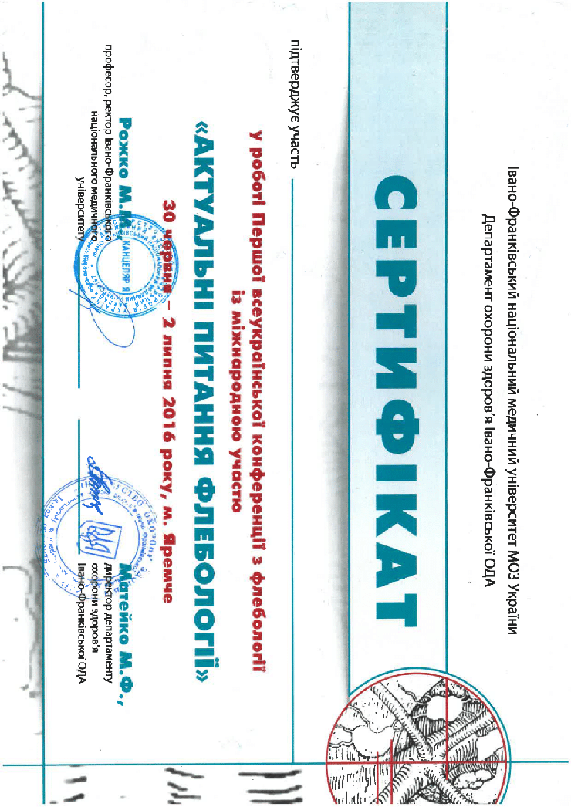
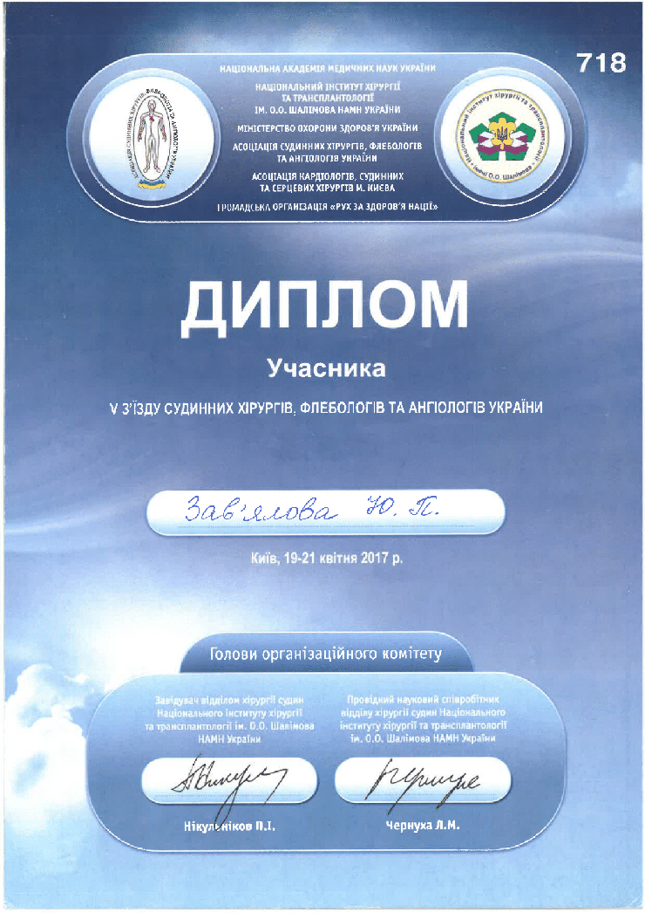
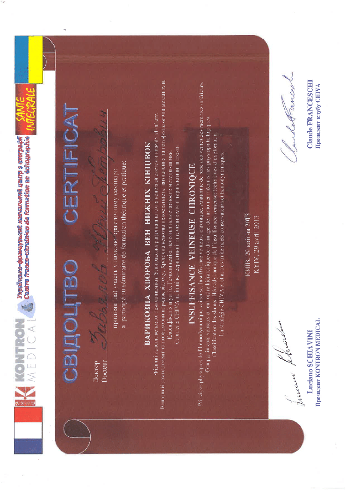
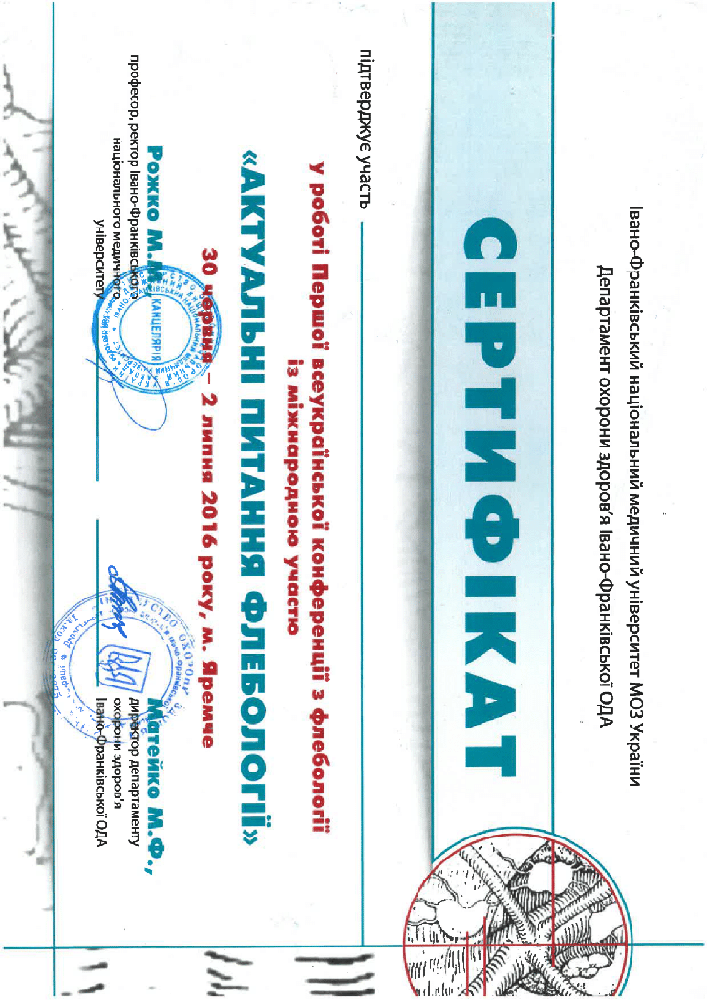
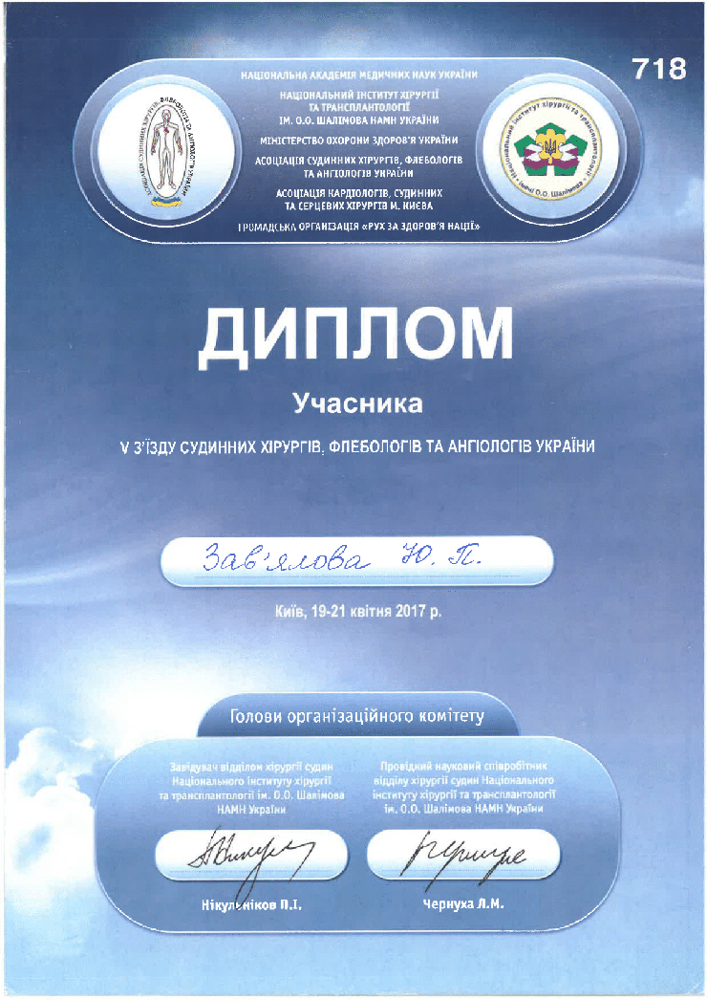
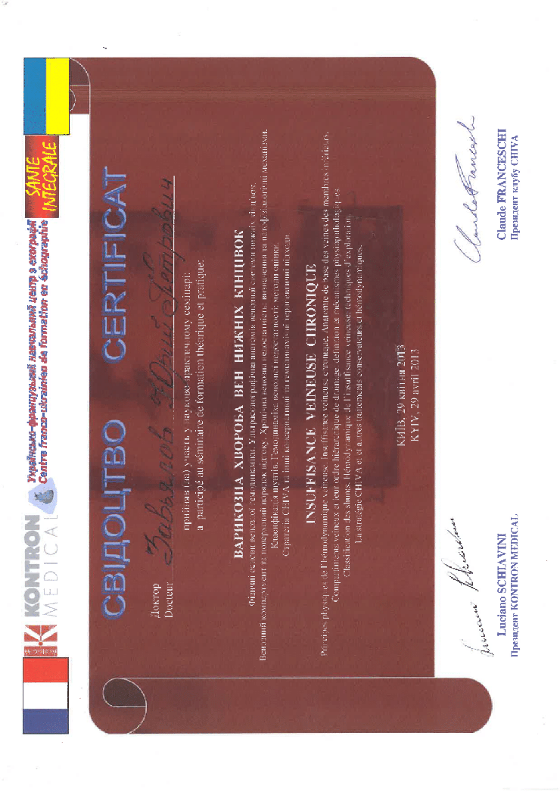
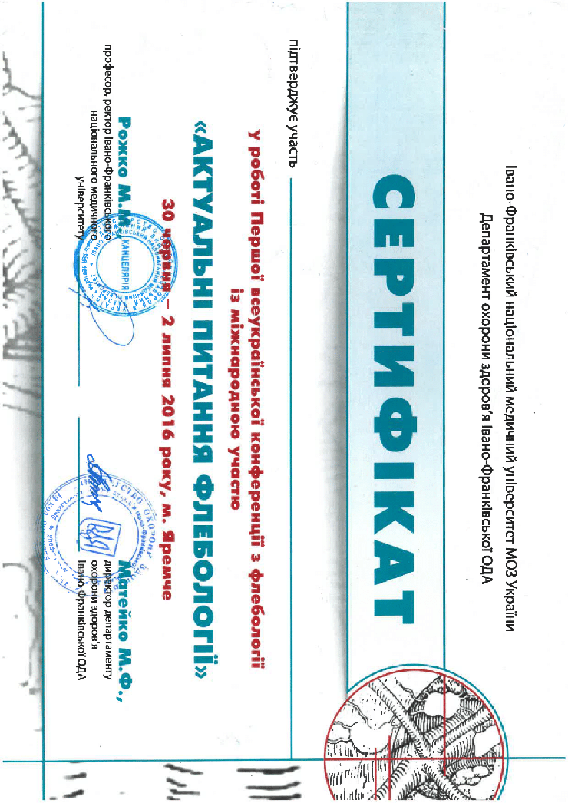
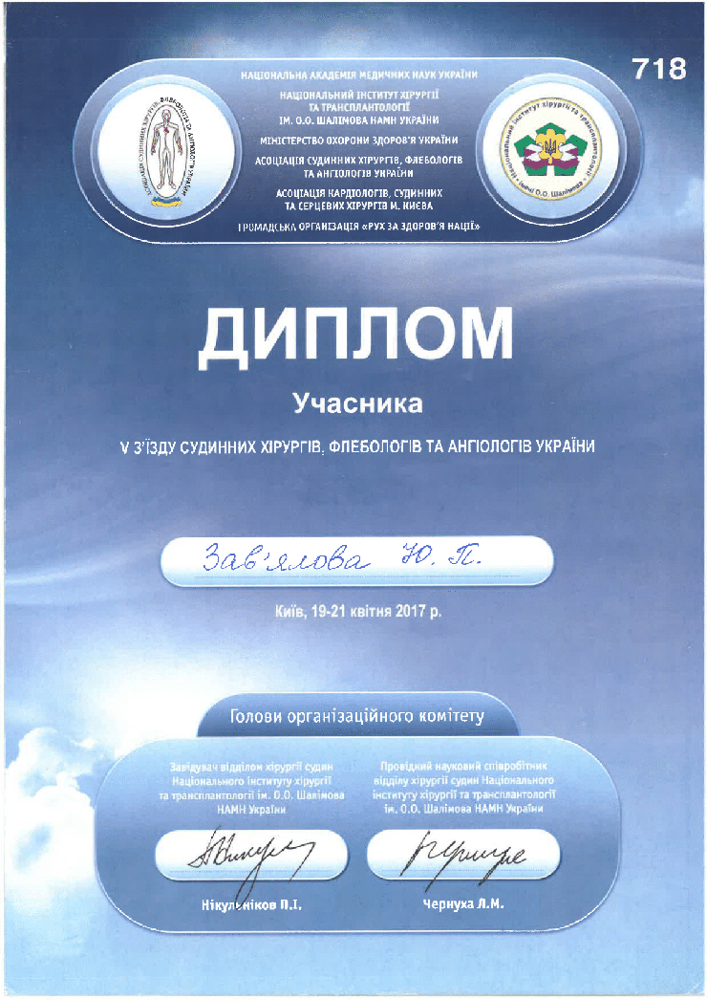

Провідний лікар-флеболог, лікар-хірург вищої категорії.
Лікування варикозної хвороби вен нижніх кінцівок всіма видами сучасних внутрішньосудинних втручань, включаючи ендовенозну лазерну коагуляцію вен (ЕВЛК) , радіочастотну абляцію (РЧА), використання біологічного клею (VenaSeal), а також склеротерапію.
З 2012 по 2022 роки лікарем виконано понад 2000 ендовенозних втручань з приводу варикозної хвороби вен нижніх кінцівок.
- лікування та діагностики захворювань вен нижніх кінцівок на всіх стадіях хвороби,
- лікування ускладнень варикозної хвороби.
З травня 2022р і до тепер працюю судинним хірургом-флебологом у клініці Оксфорд Медiкал м. Київ, на Березняках
2012 – 2022 – у зв’язку з появою нових сучасних високотехнологічних хірургічних методів лікування варикозної хвороби нижніх кінцівок, після отримання відповідного додаткового навчання працював як лікар-флеболог в медичному центрі «Адастра» м. Маріуполь.
2013 - спеціалізація з судинної хірургії в Національній медичній академії післядипломної освіти ім. П.Л. Щупика, Київ.
1987-2012 – лікар-ординатор хірургічного відділення Міської лікарні №4, м. Маріуполь –надання планової та ургентної хірургічної допомоги
1986-1987 – спеціалізація за фахом «Хірургія», Національний Медичний Університет ім. Горького, м. Донецьк
1980-1986 - Національний Медичний Університет ім. Горького, м. Донецьк, спеціальність – лікувальна справа, професійна кваліфікація - лікар
З березня до листопада 2023р. пройшов первинну спеціалізацію з УЗД.
2019:
- тематичне удосконалення в медичному центрі «Ассута» (Тель-Авів, Ізраїль) із застосування біологічного клею Венасіл (VenaSeal Closure system)
- учасник конгресу асоціації судинних хірургів та ангіологів України
- майстер-клас по лікуванню варикозної хвороби біологічним клеєм Венасіл, Дюссельдорф, Німеччина (Treating Venous Reflux Disease with VenaSeal Closure system Dusseldorf)
2016:
- стажування у флебологічній клініці лікаря Uldis Mauriņš (Dr Maurina Vein Center)
- навчання на базі приватної судинної клініки (RFA VNUS Closure Procedure Training, Medtronic Aсademia), Братислава, Словакія.
2014:
- учасник майстер-класу по склеротерапії телеангіоектазій і ретикулярних вен (Compact Micro-Sclerotherapy Training), Мюнхен, Німеччина.
- учасник майстер-класу по сучасним методам лікування варикозної хвороби у медичному центрі «Ассута» (Workshop «Radiofrequency ablation as a method of the chronic venous insufficiency treatment»), Тель-Авів, Ізраїль.
2013:
- учасник науково-практичного семінару «Варикозна хвороба вен нижніх кінцівок» , Українсько-французький навчальний центр з ехографії Sante Integrale, Київ
- учасник майстер-класу з радіочастотної абляції підшкірних вен нижніх кінцівок при варикозній хворобі в судинному відділенні залізничної лікарні, м. Санкт-Петербург, Росія.
2012 – навчання у провідному Флебологічному Центрі Національного медико-хіріругічного центру ім. Пірогова за програмою «Новітні технології у хірургічному лікуванні захворювань вен нижніх кінцівок», «Ендовенозна лазерна облітерація у хірургічному лікування захворювань вен нижніх кінцівок», м. Москва, Росія.
Постійний учасник конференцій і конгресів судинних хірургів, флебологів і ангіологів України.





Усі операції проводять у нашій новій сучасній клініці Оксфорд Медікал, яка розташована на лівому березі за адресою: Березняківська 30Б, у цій клініці проходять усі операції, пацієнти перебувають під пильним наглядом лікаря і медперсоналу, клініка обладнана всіма необхідними ультратехнологічними апаратами для проведення максимально безболісних і якісних операцій, у клініці індивідуальний підхід до кожного нашого пацієнта, уважність, турбота та повний супровід і підтримка на кожному етапі лікування.
Для того, щоб виявити або виключити патологію артеріального і венозного кровообігу, а так само підібрати необхідне лікування-використовують метод ультразвукової діагностики. Ультразвуком діагностують тромби в артеріях і венах, дифузні або локальні зміни і їх структури.
Сучасна флебологія неможлива без кваліфікованого ультразвукового обстеження вен методом ультразвукового дуплексного сканування - «золотий» стандарт діагностики.
Оперативне лікування вен нижніх кінцівок не може виконувати хірург (флеболог), який не розуміється на нюансах ультразвукової діагностики судин або не володіє цим методом власноруч.
Малоінвазивність, повторюваність, висока чутливість та специфічність методу УЗДС робить його незамінним для вирішення наступних питань:
• Діагностика захворювань вен нижніх кінцівок, зокрема варикозної хвороби та визначення анатомічного та гемодинамічного варіанту.
• УЗ-діагностика тромбозу глибоких та поверхневих вен та диференційна діагностика.
• Формування плана та вибір тактики лікування по результатам проведеного дослідження (які методи мають бути використані).
• Ультразвуковий супровід мінінвазивних хірургічних втручань на венах нижніх кінцівок: передопераційне маркування вен, ультразвукова навігація процедури та післяопераційне УЗ-спостереження за пацієнтами.
• Аналіз нестандартних ситуацій та складних випадків.
Радіочастотна облітерація вважається малотравматичним методом лікування, оскільки під час його застосування відсутній грубий механічний вплив на навколишні тканини, як під час хірургічного способу видалення вени. Процедуру проводять під місцевою анестезією, без розрізів і накладення швів, і не потребує госпіталізації.
Я використовую сучасне високотехнологічне обладнання від компанії Medtronuic - провідного американського виробника медичного обладнання та апаратури. Пройшов спеціальне навчання і досконало володіють методикою проведення операції РЧА.
Ендовенозна лазерна абляція варикозних вен — це новий метод лікування варикозних вен без хірургічного втручання. Замість того, щоб перев’язувати та видаляти пошкоджені вени, вони нагріваються лазером, під впливом термічного тепла стінки вен склеюються і розсмоктуються, а кров перерозприділяється у здорові судини.
Лікування займає близько 30 хвилин на кожну ногу і переноситься легко.
Після неї пацієнтові на ногу надягають компресійні панчохи (на 14-40 днів), спостерігають за ним пару годин в клініці, а потім відпускають додому. Рекомендується щоденна активна ходьба по декілька км. Важливо уникати тривалих статичних навантажень, відвідування сауни і прийняття гарячих ванн.
Лазерне лікування варикозу дозволяє зберегти працездатність, без втрати якості життя.
Ендовенозна лазерна абляція – один із сучасних методів лікування варикозної хвороби, який полягає у тому, щоб замість перев’язки або видалення “хворого” стовбуру магістральних підшкірних вен його нагрівають лазером зсередини. Висока температура і нагрівання руйнують клітини внутрішньої стінки вен, після чого вена склеюється і в подальшому розсмоктується
Мініфлебектомія - це малоінвазивний спосіб видалення варикозних вузлів і вен за допомогою проколів. При операції не проводиться розрізів, що дозволяє мінімізувати травматичність і терміни реабілітації.
Для усунення вузлів використовуються спеціальні гачки, а проколи виконуються за допомогою спеціальної голки. Хірургічне втручання виконується під місцевим знеболенням.
Процедура націлена на боротьбу з порушеннями венозного відтоку, що виникають в судинах з неспроможними клапанами.
Порядок проведення мініфлебектоміі:
1.Судинний хірург робить розмітку під контролем УЗД, виявляє шляхи відтоку і припливу крові.
2. Обробка шкіри антисептичним розчином.
3. Введення місцевого анестетика у зону втручання.
4. Створення проколів в зоні патологічних вен.
5. Обережне видалення за допомогою спеціального інструменту варикозно змінених гілок
7. Накладення пов'язки і еластичного бинта.
8. Надягання компресійної білизни для прискореного відновлення.
Переваги:
• На шкірі не залишається шрамів, рубців та інших дефектів;
• Застосування місцевої анестезії дозволяє скоротити терміни передопераційної підготовки і реабілітації, а також проводити операції пацієнтам, яким протипоказано загальне знеболювання;
• Тривалість операції - не більше 1 години;
• Мінімальний ризик
Мікросклеротерапія – найделікатніший метод, що застосовується для усунення найдрібніших сіточок. Використовується для досягнення найкращого естетичного результату, що особливо важливо для вимогливих пацієнтів. Склерозант дуже точно та акуратно вводиться в просвіт судини за допомогою голочки, навіть меншої, ніж використовується в косметології. Провідні лікарні світу сьогодні обов'язково використовують прилад візуалізації вен під час цієї процедури для усунення причини виникнення сіточки при її наявності.
Показання для проведення процедури:
Невеликі темні (сині) або рожеві (червоні) вени на поверхні шкіри. Вони можуть бути павукоподібними, лінійними, плямистими або деревоподібними. Застосовується тільки при косметичному дефекті. Процедуру не використовують, якщо це пов'язано з варикозним розширенням вен.
Переваги:
• Забирається до 98% проявів;
• Повністю безпечна;
• Всі сліди зникають за 3-4 тижні;
• Не залишає слідів або шрамів;
• Не викликає болю.
Протипоказання:
• Алергія на склерозант;
• Серцева / легенева недостатність;
• Печінкова / ниркова недостатність;
• Інфекційна патологія м’яких тканин, шкіри;
• Гострі запальні процеси;
• Загострення хронічних захворювань;
• Вагітність, годування грудьми;
• Цукровий діабет 1 і 2 типів.